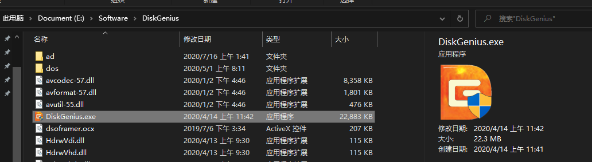
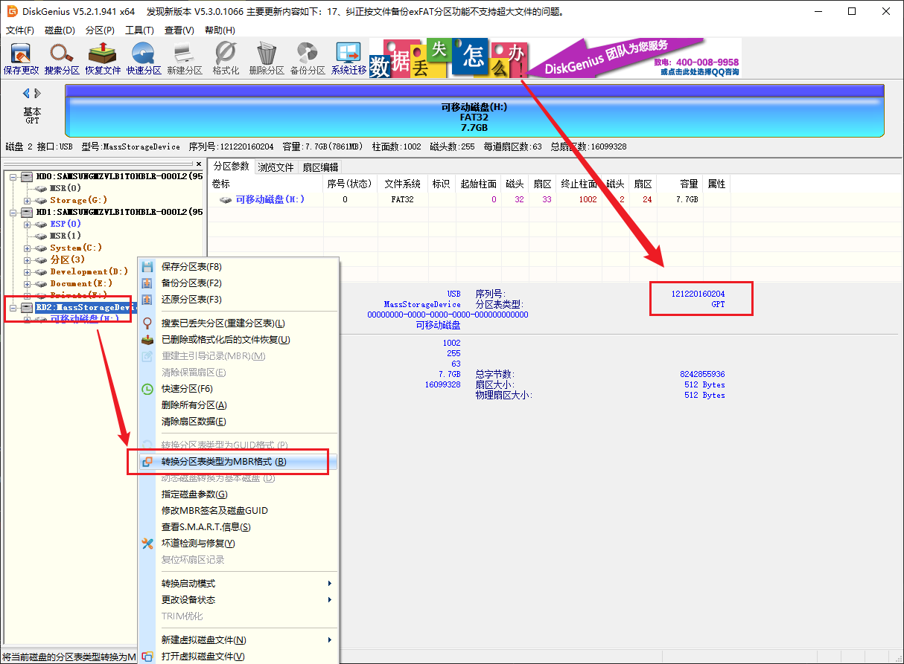
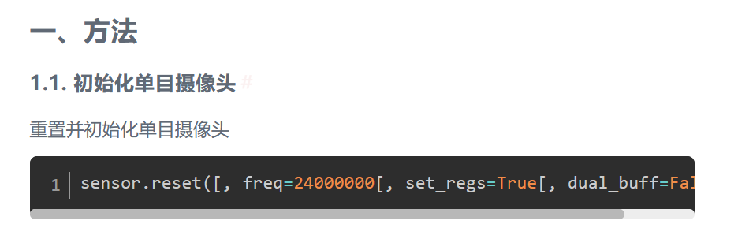
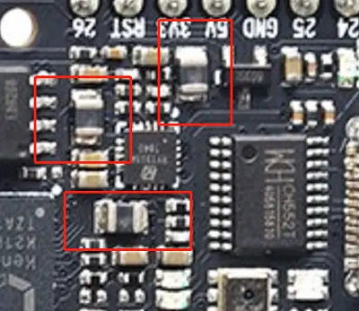

中文
中文MaixPy 常见问题
MaixPy 与 C 开发有什么异同，我该怎么选择
MaixPy 是基于 Micropython 的脚本语言， 不需要编译，在运行时解析，编写起来更简单方便，只是运行时时实性不如 C 语言。
所以如果是快速验证、新手、只会 python、头发少等都可以用 MaixPy; 追求极限性能效率或者熟悉 C ，以及对 MaixPy 的长期运行的稳定性不太有信心的都可以使用 C 语言开发
MaixPy 软件包失败现象
- 卸载干净之前下的软件安装包，重新下载并换磁盘安装。
- 卸载软件，删除释放的文件，清理注册表后，重装即可
MaixPy IDE 无法成功连接开发板
现象:
开发板到手之后，一直无法连接 MaixPy IDE
检查固件是否支持 IDE， 早期的固件以及名字带
minimum的固件都不支持检查串口是否被占用（其它软件也打开了串口）
点击连接后，不用和终端工具同时使用，否则会出现串口占用无法打开
如果一直无法成功连接成功， 检查：
请检查是否开发板型号选择错误；
观察开发板屏幕是否有变化，如果没有反应可能是串口选择错误；
尝试升级到最新的 master 分支固件， 以及最新的 MaixPy IDE 软件
MaixPy 版本号低于 0.5.0_v0 不支持连接 MaixPy IDE
Micro SD 卡读取不到
Micro SD 读取不到现象及解决方法:
确认 SD 能否在电脑上正常使用，如果不能即 SD 已损坏，
电脑能够正常使用，读取 SD，但 MaixPy 开发板无法使用：
SD 卡未格式化为 MBR 分区 FAT32 格式
- 电脑能够正常使用 SD 卡，也确认 SD 卡的磁盘格式为 FAT32，但 MaixPy 开发板依旧无法使用：
可能存在的原因：部分 SD 出厂时，sd 中没有磁盘分区表，或者磁盘分区表类型不是 MBR
解决的方法：使用第三方磁盘管理软件，将 sd 分区表类型转换为 MBR, 并且将 sd 格式格式化为 FAT32
这里使用 Diskgenius 来转换磁盘分区表格式



- SD 卡不支持 SPI 协议
目前硬件只能支持 SPI 协议读取， 尽量购买正规的卡
比如：下图左边两张卡 MaixPy 的驱动不支持， 中间和右边的都支持， 但是中间的 class10 卡速度最快（最高测过 128GB可用）
另外测试过网上购买的几张闪迪、金士顿、三星的卡，其中发现有一张三星的卡无法使用

SD 卡支持多大容量
最大测试过 1TB 可以使用
使用 SD 加载文件、模型不成功
现象：我们在使用过程中可能遇到加载模型提示错误，
可能存在的问题原因: sd 不兼容，挂载不成功
验证 sd 卡是否挂载方法:
import os
print(os.listdir("/"))
>>['flash'] # 没有挂载 SD 卡
>>['flash', 'sd'] # 挂载 SD 卡成功
为什么连接了 IDE 帧率降低了很多
K210 没有 USB 外设， 因此只能使用串口与 IDE 通信， 速度不如 USB 设备快，因此会影响帧率， 可以关闭 IDE 的摄像头预览
为什么 IDE 上预览的摄像头图像很模糊
K210 没有 USB 外设， 因此只能使用串口与 IDE 通信， 速度不如 USB 设备快， 因此对图片进行了压缩，如果需要看清晰的图像请在开发板的屏幕上看，或者保存成图片传到电脑查看
所以 IDE 的图像预览功能主要是给教学和演示使用， 平时建议使用屏幕，
可以使用以下代码来设置预览图质量
sensor.set_jb_quality(95)
这样就将预览图的质量设置为了 95%， 但是帧率会有明显降低
怎么提高摄像头帧率
- 换更好的摄像头，比如
ov7740帧率会比ov2640高一点。 但前提是摄像头电路必须与开发板的电路兼容 - 增加摄像头时钟频率(
sensor.reset(freq=))，但是注意不要太高，太高会让画面变差 - 可以自己编译源码，打开摄像头双缓冲选项（默认打开），并且
sensor.reset(dual_buff=True)，帧率会有所增加，但是相应地，耗费的内存也会增加（大约为 384KiB ）
IDE 帧缓冲区成像方向不正确，LCD 显示方向不正确
由于 MaixPy 支持的硬件型号较多，在使用 MaixPy IDE 或者 LCD 显示的时候会出现显示的方向不正确,那么这时候我们就需要对图像进行旋转了;
在修正显示方向之前,我们需要确认是 Sensor 方向旋转(MaixPy IDE 右上角的图像即为 Sensor 直接输出的图像)了，还是 LCD 方向旋转了
修正方法:
- sensor 方向修正：
# 设置摄像头水平镜像
# `enable`: 1 表示开启水平镜像 0 表示关闭水平镜像
sensor.set_hmirror(enable)
# 设置摄像头垂直镜像
# `enable`: 1 表示开启垂直镜像 0 表示关闭垂直镜像
sensor.set_vflip(enable)
- lcd 方向修正：
# 设置 `LCD` 屏幕方向
# 参数: `dir`: 取值范围 [0,3]， 从`0`到`3`依次顺时针旋转
# 返回值: 当前方向，取值[0,3]
lcd.rotation(dir)
# 设置 `LCD` 是否镜面显示
# 参数: `invert`： 是否镜面显示， `True` 或者 `False`
# 返回值: 当前设置，是否镜面显示，返回`True`或者`False`
lcd.mirror(invert)
烧录 MaixPy 之后， K210 无法启动
现象：我们在使用过程中可能遇到烧录 MaixPy 之后，MaixPy 出现无法启动(表象为 无法点亮屏幕，白屏 等)，
问题原因: 出现这种现象很大一部分是内部文件系统中的配置文件读取出错，或者我们设置的系统配置值(如 gc heap 值过大)出错导致系统无法启动。
解决方法：擦除文件系统(擦除全部 flash)
使用 kflash_gui 右上角选择擦除功能，然后加载MaixPy 文件系统模板，地址变成0xD00000, 长度变为3MiB
或者直接烧录擦除固件: 点击下载 K210-chip_erase.kfpkg
擦除后再重新烧录一次目标固件即可
使用 JTAG 调试器一直无法接连 K210
现象：使用裸机开发 K210, JTAG 调试器一直无法接连 K210
可能的原因：
- OpenOCD 调试环境搭建有问题（细节这里不说明）
- 烧录过 key_gen.bin 之后，将永久禁用 K210 的 JTAG 调试功能
下载，保存脚本到 MaixPy 内部flash 之后，板子无法更新固件，无法启动运行脚本
可能现象：下载，保存脚本到 MaixPy 内部flash 之后，板子无法更新固件，板子无法启动
- 程序中拉高了 GPIO16, 造成了自动下载点电路无法拉低 GPIO16,使 K210 进入 ISP 模式，手动拉低 16 号管脚即可
kflash 无法烧录/更新 MaixPy 固件
kflash_gui 配置选项
- 开发板型号
- 开发板型号选错
- 烧录空间(SRAM/Flash)
- 烧录空间选错
- 波特率&下载速度模式
- 下载波特率过高
出现 type object 'board_info' has no attribute 'XX'
请看开发板配置文件,对开发板进行重新配置
TF卡格式没有问题，但是无法读取TF卡，挂载失败
请使用
from machine import SDCard
SDCard.remount()
进行重新挂载
使用
def sd_check():
import os
try:
os.listdir("/sd/.")
except Exception as e:
return False
return True
print(sd_check())
进行检测是否挂载成功
ValueError:[MAIXPY]kpu: load error:2002, ERR_KMODEL_VERSION: onlysupport kmodel V3/V4 now
1、更新固件，更新固件，更新到最新版本支持v3/v4的MaixPy固件，具体更新方法看前面的文档
2、检查存放模型的位置是否与读取的位置是否一致，如果将模型放到sd上，然后读取的位置为flash的0x300000时就会出现这样的错误
3、如果是使用以 smodel 为后缀模型，必需使用自己开发板上的机器码 (从 MaixHub) 来获取模型。
在 MaixPyIDE 上运行 boot.py 文件时，卡死，没有显示，没有报错
如果你的模型是烧录到flash上，你需要在串口终端上运行boot.py里面的代码，输出一段红色的报错信息为Out of memory，这时你需要将模型放到sd上，然后再进行读取（一定要可以挂载的sd卡，否则都是白干）
运行模型的时候报 ValueError: [MAIXPY]kpu: load error:2006, ERR. NO_ MEM: memory not enough
同上 Out of memory ，请使用更小的固件获得更多的运行内存，标准固件大于 2m 剩余 1m 多，同理选用 600kb 可以获得 3m 多的运行内存，查看剩余运行内存看 demo_view_mem.py。
这是内存不足了，不是 flash 或者是 sd 内存不够，是运行内存不够了。解决办法：
- 这时需要跟换 mini 固件得以解决，如果还是不行，那就要减少训练的时候使用的数据集
- 或者通过查看【内存管理】这篇教程进行对内存和 GC 进行调整
OSEerror: [Errno 2] ENOENT/OSError:[Error 5] EIO
所需要读取的文件不存在对应的路径上，如果这个文件是在sd卡上的话，建议查看sd卡是否挂载了
使用一下代码判断内存是否挂载上，如果挂载不上会放回False，可能是卡不兼容，或者是卡没有格式化好，如果不是在官方店买的卡，不能保证能用(官方卡出现不能使用的及时与客服反馈)
def sd_check():
import os
try:
os.listdir("/sd/.")
except Exception as e:
return False
return True
print(sd_check())
可以使用下面代码进行重新挂载
from machine import SDCard
SDCard.remount()
串口终端打不开板子，但是ide可以运行
1、检查串口是不是被ide占用了，因为串口只能用一个软件进行打开。
2、使用 ide 中软件菜单的串口终端打开
ValueError: [MAIXPY]kpu: load error:2005,ERR_READ_FILE: read file failed
读取文件失败（read file failed）
重新获取模型，重新烧录模型，重新导入模型。
检查文件是不是损坏了，用校验工具对比一下。
检查sd卡上的模型模型和代码中的名字与路径是不是一样的。
检查模型下载地址是不是和程序一样。
烧录了 key_gen.bin 之后的操作
烧录 key_gen.bin 之后，通过串口软件来连接开发板，然后按下 reset 按键，重启开发板，可以看到机器码打印到串口的接收区中。也可以通过 MaixPy IDE 中的 串口终端来连接开发板查看机器码。
获取到机器码之后，需要重新烧录需要使用的固件才能运行对应的代码。否则是连 IDE 都无法连接的
摄像头拍摄的模糊
使用 OV5642 摄像头拍摄出来的画面模糊，可以通过扭动摄像头来进行调整焦距。如果使用其他的摄像头拍摄的模糊也是同理，但有些摄像头特性就是如此，只能通过更改摄像头来进行修改
烧录模型或者固件，出现花屏、屏幕颜色不对、屏幕颜色单一
这时需要使用 kflash 来对 flash 整片擦除，然后重新烧录 固件 和 模型。
烧录模型到 flsah 的时候一定要注意烧录的位置，是否正确（数清楚对应 0 的个数）。
比如常见的白色花屏以及黄屏就是固件烧错，需要擦除重烧标准固件就正常了，主要因为屏幕配置不同导致的。
比如绿屏可能是摄像头损坏了输出了绿色图像。
比如红屏是正常的，但需要用户下载程序。
蓝屏的话需要完全擦除片内 flash 后再重新烧录。

TypeError: Can't convert to type 错误
Maixpy ide 挂着运行时内存不足，就会出现的常见错误，解决方法，换成菜单的打开终端运行，或让内存有一定预留就不会出现了。
kpu:check img format err!
注意看终端输出提示，特别强调！！！
灰色字体的错误 kpu img w=320, h=240 but model w=224, h=224
意思是说，这个模型的要求是 224 224 ，但输入的是 320 240 。
所以要改图片为 224 224 输入，如果是 128 128 同理修改图片尺寸！！！！！
要么使用 sensor.set_windowing 改变摄像头输入大小，要么对 图像 img.resize 改变图像大小。
ValueError input not support
检查一下 Python 代码出错行，排查 ValueError 错误，一般发生在输入的类型不与目标函数所需的类型一致导致的错误，可能是内存不足导致对象为 None 也可能是类被回收了。
OSError reset failed
这种情况表示板卡对摄像头初始化失败了，可以看到 sensor.reset() 是有初始化摄像头的功能的。

- 摄像头接线错误，板卡不能正常对摄像头进行初始化操作。
- 摄像头损坏，板卡无法对摄像头初始化。
建议使用 Sipeed 所提供的摄像头，用户自行配备的可能因为线序不符或者摄像头驱动不支持等原因而不能用。
后缀名为 kmodel 和 smodel 的模型文件有什么区别？
后缀名为 kmodel 的模型文件是用来阐述这个模型的形状结构和参数。
而 smodel 模型需要用到机器码；机器码是一机一码的一种加密方式，用于模型文件的加密。如果使用别的机器码去加密或者下载其他以 smodel 为文件后缀的模型文件，开发板是无法使用这些模型文件的!!
MemoryError: Out of normal MicroPython Heap Memory
前往 ： https://neucrack.com/p/325 查阅相关解决方法
如何同时运行多个模型
其实也不是同时运行，而是分时运行。
如果有足够内存，就一次性把几个模型加载到内存， 然后分别分时运行推理。
如果内存不足，加载第一个模型，运行后注销（使用 kpu.deinit），再加载运行第二个模型部分或全部模型。使用 load_flash 的方式加载模型，实时从 flash 读取内容。
如何加载大模型
由于 K210 的 RAM 的运行限制，当需要加载大模型文件时，可以通过直接 Flash 中动态加载并运行。
具体用法前往 github:
could not open port 'COMxx':Permission 错误
这种情况是因为串口被占用了，自己将使用过串口的程序关闭掉就行。实在不会解决的话重启电脑也能达到关闭所有使用串口程序的效果。
Maix Dock 串口不能用
Maix Dock 不能使用 MobaXterm 或其他 不支持手动串口流控制的软件 来进行串口通信。
为了节省时间，建议使用 MaixPy IDE 来进行通信。
可以在 MaixPy IDE 顶部菜单栏 工具->打开终端->新终端->连接到串口->选择正确的串口->115200波特率 来新建一个终端，在这里面使用串口。

烧录固件途中出现握手失败等报错信息

一般出现这个问题，先从以下几个方面判断问题（因使用环境不同造就的设备握手失败）
- 设备管理器没有
COM端口，重新安装串口驱动或者更换 USB 线材再次尝试。 - 设备管理器出现
COM端口，但是串口被其它软件占用了，重新插拔一次 USB 即可。 - 更新烧录软件到最新版本：点我。
- 烧录前依次按住 BOOT 和 RST 按键，然后按顺序松开 RST 按键和 BOOT 按键，使芯片进行烧录模式。
- 尝试过以上的方法都不行的话请更换电脑设备尝试，可能由于 USB HUB 或者 USB 线缆等外部因素导致的。
摄像头出现黑斑现象

显示黑斑，但是有正常画面。说明摄像头内片不干净，拆开摄像头后小心擦拭下。
运行摄像头程序显示：RuntimeError：Sensor timeout!
摄像头连接超时，更换摄像头。
烧录固件后画面反色
擦除、烧录固件，使用代码反色屏幕：点我查看。
孤词语句模块进入录音状态后显示：Idle 2
阅读 录入词汇模板 和 isolated_word API来了解更多
K210 是否支持 TensorFlow .h5/.tflite 格式模型
K210 支持 TensorFlow .h5/.tflite 格式模型，但使用的时候用 nncase 工具转化成 .kmodel 格式才可进行使用。相关文档链接：MaixPy AI 硬件加速基本知识
当操作失误需判断 K210 主控芯片是否短路
使用万用表查看芯片的 1.8/3.3 是否有电压，下图红框都是输出点。

使用 k210 曝光过重过低如何解决
只有 K210 配套的 OV2640 摄像头支持曝光调节，阅读 sensor 感光元件曝光控制 了解更多
K210 是否支持 U 盘挂载到电脑
K210 不支持 USB 设备，芯片没有 USB 功能，无法模拟 U 盘设备，不支持挂载文件系统到电脑。
不要再问为什么没有 U 盘或者是显示 SD 卡了！那示例设备不是 K210 。
K210 上电后电脑弹出 USB 集线有电涌
这是板卡短路了，导致 usb 电流过大电脑提示保护。
MaixHub 训练的模型，放到开发板运行时一直显示 Loading model...
可能是烧录了内存占用比较大的固件，可以先换成 minimum 版本的固件试试，可以再可以尝试普通固件
OSError: [Errno 5] EIO
- 检查 I2C 设备的地址是否正确，应该是 0x20 而不是 20。
- 检查 I2C 写入数据的格式是否正确，应该使用
b'\x03'和b'\x80'而不是b'x3'和b'x80'。 - 检查 I2C 写入命令是否正确，如果您想要设置 PCA9534 的输入/输出模式，应该使用
i2c.writeto_mem (0x20,0x3,b'\x80')而不是i2c.writeto (0x20, 2, b'x80')。 - 检查 I2C 连接线是否牢固，是否有松动或断裂的情况。
- 检查 I2C 设备是否有损坏或过热的情况。
- 在 I2C 初始化和使用之间添加一些延时，以确保 I2C 端口已经激活。
AttributeError: 'Image' object has no attribute 'find_blobs'
请参考烧录和升级固件文档，烧录带 openmv 全功能的固件，即全功能固件， minimum 版本的固件是没有这个函数的，同理，其它 openmv 的函数也如此。 如果觉得全功能固件占用内存太大，也可以自己编译裁减固件大小